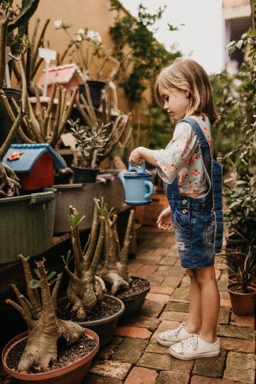

Welcome To our Cleaning Company
Phone: +1 342 422 9029 Email : info@company.com
Welcome To our Cleaning Company
Phone: +1 342 422 9029 Email : info@company.com
By Ossama allaoui • 03 Jan, 2019 • 0 Comments
Photo credit: Ossama Allaoui on YouCode
Collectibles are fun. Kids love them and let’s be honest, we all love a good challenge, especially when it means competing for something ‘limited’. When clever marketing consultants decide to use this to target children, frenzied parents are sure to follow.
But instead of teaching our children ‘we must rush out to get the latest shiny object which everyone else is rushing out to get’, Clean Up Australia is suggesting we take a moment (and take a breath!) to think of what we are REALLY teaching our next generation.
Rather than falling victim to mass marketing strategies urging us to collect wasteful trinkets, consider an alternative to collectibles which will educate our children on how to be kinder and wiser with our planet’s natural resources.
Collectible gimmicks cleverly incentivise us to spend more money, which means we end up – you guessed it – spending MORE MONEY! We over-consume, over-spend and over-waste. Instead, encourage children to collect recyclable beverage containers from home or through a local clean up and actually EARN MONEY! Recyclable bottles and cans can be returned through container deposit systems such as Return & Earn in NSW (find a collection point here)* to receive a CASH rebate. Teach children that packaging consumes our planet’s limited resources and this has a value when returned and recycled. What better way to help the planet and earn a little pocket money!
Did you know? According to the 2018 Clean Up Australia Rubbish Report, Beverage Containers are the 3RD MOST COMMON ITEM found in our country’s natural habitats including beaches, waterways, parks and bush-land.
Don’t forget to encourage kids to collect anything around the house which can be recycled: hard and soft plastics, metals, paper, batteries, ink cartridges and e-waste. Check your local council’s waste information on ways to recycle in your area. *Note/ Almost every state and territory in Australia currently has or will introduce a similar system – except Victoria (submit a petition to make VIC happen).
Collectibles are appealing because everyone loves a project. You have a goal and you don’t stop until you get there. Embark on a project with your children that will teach them about the beauty and nourishment provided by plants.
Collect plants to start a garden. A veggie garden, herb garden or any type of garden will do – anything you can sustainably manage at home. Start a little project to grow your garden over time. You could even use a small compost system or worm farm to recycle nutrients through the garden.Or if you simply don’t have the space or patience, take the kids to your local community garden and show them how coming together as a community around nature can benefit everyone.
Teach kids they can grow fresh, safe, affordable fruits and vegetables to nourish their bodies, lower stress and connect with the planet. Teach them that the world needs plants to survive.
Collecting ultimately useless things seems like a terrible way to teach our children about a sustainable future. According to Minimalist Lifestyle: 'an average child will accumulate 238 toys by the time they are 10 years old. They will only play with about 12 of them.'
Instead of collecting items which will likely be discarded to landfill by the end of the year, create experiences and collect memories for children which will last a lifetime.
It can be as simple as going for a local bush-walk, following a nature trail, or heading to a park or beach. There are plenty ‘Things to Do’ websites overflowing with ideas to give kids great local experiences. Try tickets to a show, taking classes, going to the library or a fun park. Make sure to take photos and record your memories, because these are the best possible collections you will ever own.
With latest kids’ craze continually inducing some sort of parent mania, it’s time to take a breath and remember what is important. Our planet is our most precious natural resource and its future is in our children’s precious little hands.
For more information about reducing waste and living greener, head to Clean Up Australia’s website: https://www.cleanup.org.au/